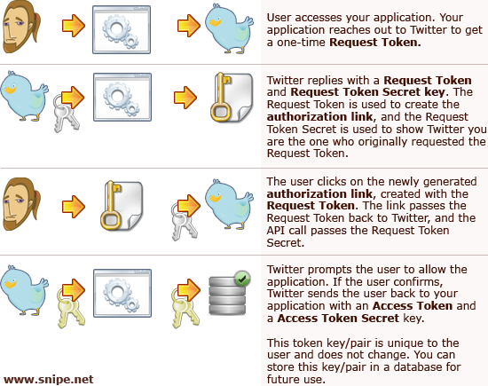
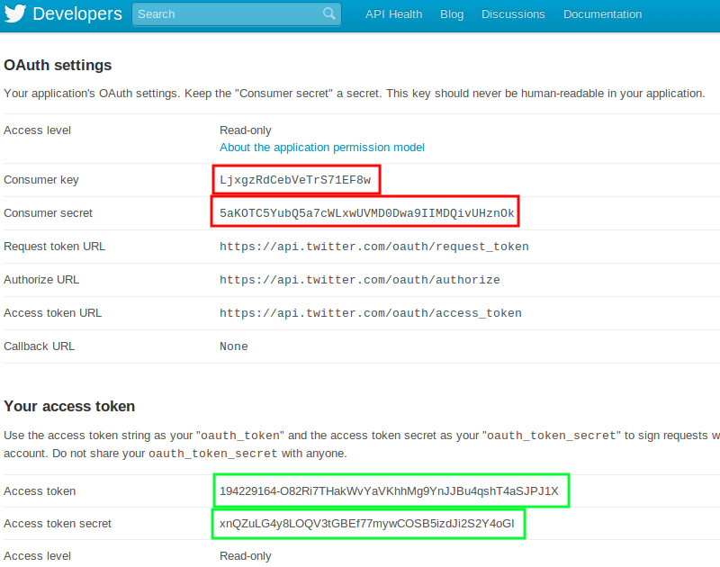

Obtenção de dados do Twitter
Gabriel Pugliese - @gabrielsapo
nUSP: 5639061
Paulo Cheadi Haddad Filho - @paulochf
nUSP: 5210744
Gabriel Pugliese - @gabrielsapo
nUSP: 5639061
Paulo Cheadi Haddad Filho - @paulochf
nUSP: 5210744

Como tweetar "Hello World!" com OAuth1.0a
POST /1/statuses/update.json?include_entities=true HTTP/1.1
Accept: *
Connection: close
User-Agent: OAuth gem v0.4.4
Content-Type: application/x-www-form-urlencoded
Authorization:
OAuth oauth_consumer_key="xvz1evFS4wEEPTGEFPHBog",
oauth_nonce="kYjzVBB8Y0ZFabxSWbWovY3uYSQ2pTgmZeNu2VS4cg",
oauth_signature="tnnArxj06cWHq44gCs1OSKk%2FjLY%3D",
oauth_signature_method="HMAC-SHA1",
oauth_timestamp="1318622958",
oauth_token="370773112-GmHxMAgYyLbNEtIKZeRNFsMKPR9EyMZeS9weJAEb",
oauth_version="1.0"
Content-Length: 76
Host: api.twitter.com
status=Hello%20World%21
"An open protocol to allow secure authorization in a simple and standard method from web, mobile and desktop applications."
Após criar uma aplicação em dev.twitter.com/apps/:
Na maioria das vezes, quanto mais autorizações requeridas de um usuário, maior a probabilidade de rejeição do aplicativo pelo usuário.
Na aba settings da sua aplicação:


var //
url = "//search.twitter.com/search.json?q=ime-usp&rpp=3&callback=?";
jQuery.getJSON(url, function(data)
{
//loop the tweets
jQuery(data.results).each(function(i,v)
{
alert('@' + v.from_user + ': ' + v.text);
});
});
Para facilitar o paralelo entre os métodos da API do Twitter4j e o dev console:
// The factory instance is re-useable and thread safe. Twitter twitter = new TwitterFactory().getInstance(); Liststatuses = twitter.getFriendsTimeline(); System.out.println("Showing friends timeline."); for (Status status : statuses) { System.out.println(status.getUser().getName() + ":" + status.getText()); }